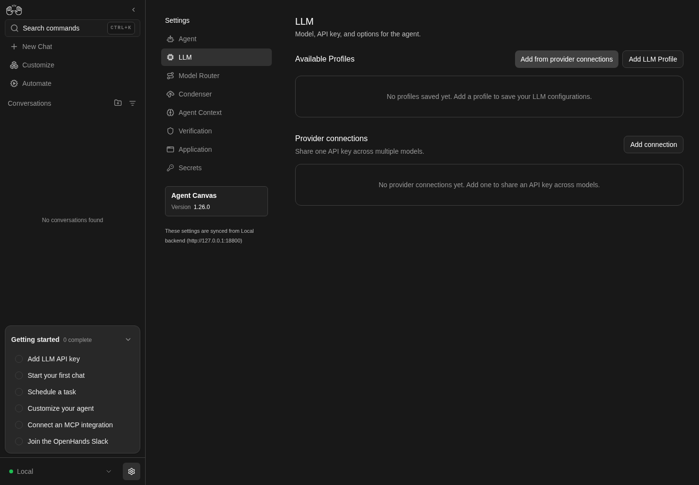
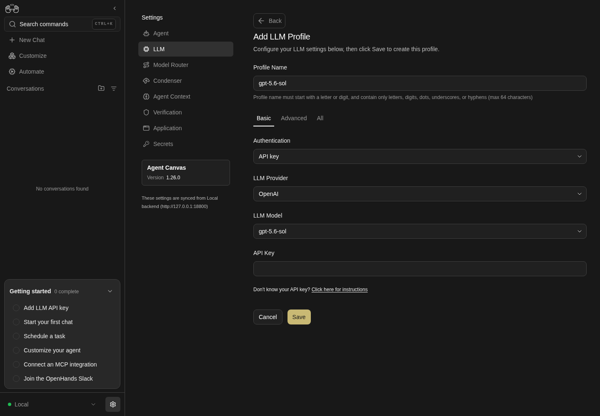
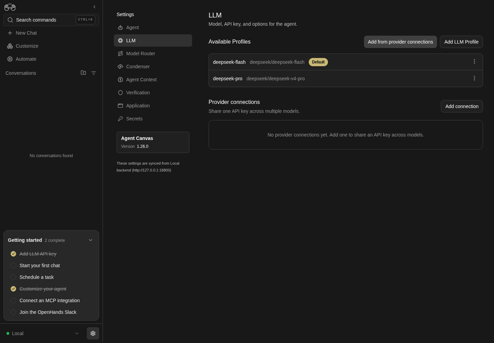

How to get to it
- Sidebar settings gear (
backend-selector-settings-link, opens/settings/agents), then LLM in the settings navigation (sidebar-settings-/settings/llm). - Direct URL
/settings/llm. - Command menu (
Control+korMeta+k, orcommand-menu-triggerin the sidebar): search "LLM", choose LLM profiles ("Manage models, providers, and API keys."). - On the list: Add LLM Profile (
add-llm-profile), Add from provider connections (add-models-from-provider), each row's...(profile-menu-trigger), and a provider connection row's...→ Bulk add (provider-connection-add-models). - The create/edit editor has no URL of its own: it replaces the list in place at
/settings/llm; Back (back-to-profiles) and Cancel (cancel-profile-btn) return to the list.
Before you start
Start with the common launch and health checks, then follow this family’s preconditions in order. Recipes share the fixtures and state named below.
Preconditions:
- Baseline state (launched, doctored,
onboard --skipdone). Do not runllm preset deepseekfirst: a fresh run has no profiles, which the empty state and "first profile becomes Default" need. - A DeepSeek key for real saves, either in the environment as
DEEPSEEK_API_KEYor in a file. Pass it only withbrowser fill ... --value-env DEEPSEEK_API_KEYor--value-file <key file>; never on the command line. - No profile or connection named
QA_*,deepseek-chatordeepseek-v3exists (control-openhands api GET /api/profiles,control-openhands api GET /api/llm/provider-connections). - Select a row by exact name with the CSS form
'[data-testid=profile-row]:has([title="<name>"])';has-text=QA_proalso matchesQA_pro-copy. - Read toasts with
control-openhands browser wait-text '<text>'(orbrowser toasts) right after the click; they disappear after a few seconds. - Blocked here: completing
F10.subscriptionsign-in (needs a ChatGPT Plus/Pro account),F10.cloud-readonly(needs a Cloud org member account),F10.cloud-provider-pagination(needs a Cloud organization backend where the user can manage profiles),F10.schema-unavailable(needs an agent server without the schema endpoints, for example an olderlaunch --sdk-ref), and theF10.list-stateserror (needs/api/profilesto fail while the rest of the agent server answers).
Behavior inventory
34 stable behavior IDs and their expected behavior
F10.listthe "Available Profiles" list shows each row's name, model, aDefaultbadge on the active profile and a...menu, sorted by name; reachable from the sidebar, the direct URL and the command menu. Read recipe ↓F10.list-emptywith no profiles the list readsNo profiles saved yet. Add a profile to save your LLM configurations.and both Add buttons stay available. Read recipe ↓F10.list-statesa spinner shows while profiles load; a load failure showsFailed to load profiles. Read recipe ↓F10.list-groupedonce any profile links to a provider connection, rows group under the connection's name, with unlinked rows last underNot linked; with no linked rows the list is flat again. Read recipe ↓F10.broken-linka profile whose linked connection no longer exists shows a warningBroken linkbadge whose tooltip says to edit the profile to re-link it; its editor offers the orphaned id in the Provider connection selector so it can be cleared. Read recipe ↓F10.set-defaultSet as default toastsSwitched to profile "<name>", moves the badge, persists and becomes the agent's active LLM. Read recipe ↓F10.duplicateDuplicate saves<name>-copy, then<name>-copy-1, with the same model and stored key; the copy is not Default. Read recipe ↓F10.renamethe Rename modal is prefilled and focused; invalid names disable Rename; an unchanged name or Cancel just closes; Enter submits; success toasts and persists, and the Default badge follows a renamed default. Read recipe ↓F10.rename-conflictrenaming onto an existing name is refused with the server's message (Profile '<name>' already exists) and the modal stays open. Read recipe ↓F10.deleteDelete asksAre you sure you want to delete the profile "<name>"? This action cannot be undone.with Cancel focused; Cancel keeps the row, Delete removes it with a toast. Read recipe ↓F10.delete-defaultdeleting the Default profile promotes another remaining profile to Default. Read recipe ↓F10.createAdd LLM Profile → provider, model and API key → Save showsValidating...thenSaving..., toastsProfile "<name>" createdand returns to the list; the first profile on an empty list becomes Default. Read recipe ↓F10.create-prefilla new editor prefills the backend default model with a blank key, base URL and connection; the other LLM options it shows come from the agent's current LLM settings, i.e. the last applied Default profile (the editor opens on the tab they need), and Save stores what the form shows. Read recipe ↓F10.api-key-helpunder the API key field (Basic and Advanced),Don't know your API key? Click here for instructionsopens the OpenHands docs on getting an API key in a new tab. Read recipe ↓F10.name-autofillthe Profile Name is auto-filled from the chosen model and follows later model changes until the user types a name; clearing the field resumes it. Read recipe ↓F10.name-validationa name that breaks the rule (letter or digit first; letters, digits,.,_,-; max 64) disables Save and turns the rule text red; a name that already exists also disables Save. Read recipe ↓F10.create-validationa Save whose validation call fails toasts the provider error and keeps the editor open with nothing saved. Read recipe ↓F10.custom-modelthe Advanced tab takes a free-text model and Base URL; an empty model is refused withModel is required. Read recipe ↓F10.model-pickerthe Basic provider and model comboboxes group options as Verified Models and Other Models; changing provider clears the model; the OpenHands provider shows account and key help. Read recipe ↓F10.provider-list-completethe Basic provider combobox offers every provider the backend reports or has verified models for (over a hundred,xaiincluded); picking a late-sorting one fills the field and loads its models. Read recipe ↓F10.cloud-provider-paginationon a Cloud organization backend the provider list is fetched fromproviders/searchpage by page, so providers past the first page (xai,openrouter) are offered too (blocked here). Read recipe ↓F10.editEdit loads the profile (Editing profile "<name>" - save to apply changes) with the stored key masked; Save stays disabled until something changes; a changed name renames before saving; the stored key is kept. Read recipe ↓F10.basic-save-keeps-base-urlre-saving a profile from the Basic view without changing its model keeps the Base URL that view hides. Read recipe ↓F10.edit-default-reapplysaving the Default profile re-applies it to the agent's LLM settings. Read recipe ↓F10.editor-discardBack and Cancel return to the list without saving and without an unsaved-changes prompt. Read recipe ↓F10.schema-validationbad values in schema fields (Temperature over 2, Top P over 1, invalid JSON) are refused with a toast naming the field. Read recipe ↓F10.connection-linkwith connections present the editor shows a Provider connection selector; linking hides API key and Base URL, skips validation on Save and regroups the row; None restores the key field. Read recipe ↓F10.add-models"Add from provider connections" (or a connection row's Bulk add) creates one linked or keyless profile per checked model; models that already have a profile of that name are hidden. Read recipe ↓F10.subscriptionAuthentication → ChatGPT subscription swaps the model fields for a subscription model list and a device-login card (code, sign-in link, poll, cancel); switching back restores the API-key model. Read recipe ↓F10.cloud-readonlyCloud org members without edit rights see the list read-only (no Add buttons, no row menus, no Provider connections section).F10.phonelist, row menu and editor fit a 390 px viewport without horizontal overflow. Read recipe ↓F10.default-useda conversation started after creating a profile in the UI runs on the Default profile's model. Read recipe ↓
Readable recipes
Read each script from top to bottom. Code is copied from the map; prose gives the action, expected observation, and conditions. <id>, <run> and similar placeholders stand for values from your own run. Short forms such as browser count continue the same control-openhands invocation; they are kept as documented.
Expected observations describe the recipe’s contract. Captures below selected recipes show representative real states from this snapshot; they do not mark every mapped behavior as passed. Follow cleanup before moving to another family.
No recipes match. Try another word or a behavior ID.
Empty list #
- NoteOn a fresh run, navigate from the sidebar:
- Check
control-openhands browser click 'testid=backend-selector-settings-link' --expect-url '/settings' - Check
control-openhands browser click 'testid=sidebar-settings-/settings/llm' --expect-url '/settings/llm' - Check
control-openhands browser text 'testid=profiles-empty' - ExpectThe text is
No profiles saved yet. Add a profile to save your LLM configurations.and - Check
control-openhands browser testids mainlists
add-llm-profile,add-models-from-providerandprofiles-empty.

LLM settings shows no saved profiles and no provider connections.
Representative documentation capture, not a complete run of this recipe or family. Captured on an isolated local backend at desktop viewport using the current main checkout.
How this screenshot was taken
canvas: 1.26.0 · agent server: 1.53.0 · sdk: 1.53.0 · automation: 1.19.0
OH_VERIFY_RUN="$OH_VERIFY_RUN" control-openhands browser goto /settings/llm
OH_VERIFY_RUN="$OH_VERIFY_RUN" control-openhands browser wait testid=add-llm-profile
OH_VERIFY_RUN="$OH_VERIFY_RUN" control-openhands browser screenshot --feature F10.list-empty --name llm-emptyOpen the editor #
- Do
control-openhands browser click 'testid=add-llm-profile' - Check
control-openhands browser text 'testid=profile-editor-title'is
Add LLM Profile, - Check
control-openhands browser text 'testid=profile-editor-description'is
Configure your LLM settings below, then click Save to create this profile., and the form opens on the Basic tab with providerOpenAIand modelgpt-5.6-sol(browser value 'testid=llm-provider-input',browser value 'testid=llm-model-input').

Add LLM Profile editor showing a profile name, OpenAI provider, gpt-5.6-sol model and an empty API key field.
Representative documentation capture, not a complete run of this recipe or family. Captured on an isolated local backend at desktop viewport using the current main checkout.
How this screenshot was taken
canvas: 1.26.0 · agent server: 1.53.0 · sdk: 1.53.0 · automation: 1.19.0
OH_VERIFY_RUN="$OH_VERIFY_RUN" control-openhands browser goto /settings/llm
OH_VERIFY_RUN="$OH_VERIFY_RUN" control-openhands browser wait testid=add-llm-profile
OH_VERIFY_RUN="$OH_VERIFY_RUN" control-openhands browser click testid=add-llm-profile
OH_VERIFY_RUN="$OH_VERIFY_RUN" control-openhands browser wait testid=profile-editor-title
OH_VERIFY_RUN="$OH_VERIFY_RUN" control-openhands browser screenshot --feature F10.create --name llm-editorAPI key help link #
- NoteIn that editor run
- Do
control-openhands browser click 'testid=sdk-section-basic-toggle'(a new editor opens on All once the agent's LLM settings carry a non-default option; see
F10.create-prefill), then - Check
control-openhands browser text 'testid=llm-api-key-help-anchor'is
Don't know your API key? Click here for instructions; its link hastarget_blank(browser eval "document.querySelector('[data-testid=llm-api-key-help-anchor] a, a[data-testid=llm-api-key-help-anchor]').target"). - Do
control-openhands browser click 'testid=llm-api-key-help-anchor >> role=link' - Do
control-openhands browser tabs(rerun once if it still lists one page): page 1 is
https://docs.openhands.dev/.../local-setup#getting-an-api-key. - NoteReturn with
- Do
control-openhands browser close-tab 1 - Do
control-openhands browser tab 0 - ExpectThe Advanced tab shows the same link as
testid=llm-api-key-help-anchor-advanced.
Provider and model lists #
- Do
control-openhands browser click 'testid=llm-provider-input' - Check
control-openhands browser snapshot 'role=listbox' - Note: groups
Verified Models(OpenHands, Anthropic, OpenAI, Mistral AI, Gemini, deepseek, Moonshot, minimax, glm, nvidia, qwen) andOther Models. - NotePick DeepSeek with
- Do
control-openhands browser fill 'testid=llm-provider-input' deepseek - Do
control-openhands browser click 'testid=provider-item-deepseek' - Note
browser value 'testid=llm-model-input'is now empty. - Do
control-openhands browser click 'testid=llm-model-input' - Noteand
browser snapshot 'role=listbox'listdeepseek-chat,deepseek-v4-pro, … as Verified anddeepseek-coder,deepseek-flash, … under Other. - NoteFor the OpenHands provider (
browser fill 'testid=llm-provider-input' openhands,browser click 'testid=provider-item-openhands'), - Check
control-openhands browser text 'testid=openhands-account-help'is
Need an OpenHands Account? Click here; after - Do
control-openhands browser click 'role=option[name="claude-sonnet-5"][exact]' - Notein the model list,
- Check
control-openhands browser text 'testid=openhands-api-key-help' - Notestarts
You can find your OpenHands Provider LLM Key in the OpenHands LLM Key section of OpenHands Cloud. - NoteScreenshot:
browser screenshot --feature F10.model-picker --name openhands-provider.
Every provider is offered #
- Do
control-openhands browser click 'testid=cancel-profile-btn'(the Provider and model lists bullet leaves its editor open; skip this when the list is showing),
- Do
control-openhands browser click 'testid=add-llm-profile' - Do
control-openhands browser click 'testid=sdk-section-basic-toggle' - Do
control-openhands browser click 'testid=llm-provider-input' - Check
control-openhands browser count 'role=listbox >> role=option'is the size of the union of the two backend lists the page merges: the names in
- Check
control-openhands api GET /api/llm/providers --pick providers(under
value;control-openhands api GET /api/llm/providers --pick providers | jq '.value | length'is160today) and the provider keys of - Check
control-openhands api GET /api/llm/models/verified --max-bytes 200000(its
bodyis{"models": {<provider>: [<model>, …]}};control-openhands api GET /api/llm/models/verified --max-bytes 200000 | jq '.body.models | keys | length'is12today, four of which,glm,nvidia,openhandsandqwen, are missing from the first list). - ExpectThe union is
jq -s '([.[0].value[]] + (.[1].body.models | keys)) | unique | length' <(control-openhands api GET /api/llm/providers --pick providers) <(control-openhands api GET /api/llm/models/verified --max-bytes 200000)(bash process substitution):164today, and the listbox count is the same164, with every backend name present under its display label (openhandsasOpenHands,mistralasMistral AI,azure_aiasAzure AI Studio). - Check
control-openhands browser count 'role=option[name="xai"][exact]'is
1(it sorts last but three, beforexiaomi_mimo,xinferenceandzai). - NotePick it with
- Do
control-openhands browser click 'role=option[name="xai"][exact]' - Check
control-openhands browser value 'testid=llm-provider-input'is
xai, - Check
control-openhands browser value 'testid=llm-model-input'is empty, and after
- Do
control-openhands browser click 'testid=llm-model-input' - Notethe listbox offers
grok-4.20,grok-4.20-0309, … under Other Models (57 today;control-openhands browser screenshot --feature F10.provider-list-complete --name xai-picked). - NoteClose with
- Do
control-openhands browser press Escape(the open listbox would swallow the next click) and
- Do
control-openhands browser click 'testid=cancel-profile-btn' - Notethe list is back.
Cloud provider pagination · Blocked prerequisite #
- NoteBlocked: needs a Cloud organization backend where the user can manage profiles (local backends serve the whole list in one
GET /api/llm/providers). - NoteThere, the Basic provider list comes from
providers/searchone page at a time (control-openhands browser network --filter providers/searchlists one request per page, the later ones with apage_id), andxaiandopenrouter, which sort past the first page, are offered and pick like any other provider. - NoteRecord
- Do
control-openhands evidence add --feature F10.cloud-provider-pagination --result blocked ... - Notenaming the Cloud account.
Create the first profile #
- NoteIn a fresh editor pick deepseek as above, then
- Do
control-openhands browser click 'testid=llm-model-input' - Do
control-openhands browser click 'testid=model-item-deepseek-flash' - Check
control-openhands browser value 'testid=profile-name-input' - Notenow follows the model:
deepseek-flash(right after the provider pick, while the model is still empty, it still readsgpt-5.6-sol). - Do
control-openhands browser fill 'testid=profile-name-input' QA_flash - Check
control-openhands browser fill 'testid=llm-api-key-input' --value-file <key file>(or
--value-env DEEPSEEK_API_KEY), - Do
control-openhands browser click 'testid=save-profile-btn' --observe 'testid=save-profile-btn' --observe-ms 4000 - Wait
control-openhands browser wait-text 'Profile "QA_flash" created' --timeout 60000 - ExpectThe observed button states are
Save,Validating...,Saving..., then the editor closes. - NoteAfter
- Do
control-openhands browser reload - Check
control-openhands browser text '[data-testid=profile-row]:has([title="QA_flash"])'reads
QA_flash,deepseek/deepseek-flash,Default, and - Check
control-openhands api GET /api/profileshas
active_profileQA_flash.
A typed name sticks; a cleared one follows again #
- NoteIn a fresh editor (
control-openhands browser click 'testid=add-llm-profile') run - Do
control-openhands browser fill 'testid=profile-name-input' QA_typed - Notethen pick deepseek as above,
- Do
control-openhands browser click 'testid=llm-model-input' - Do
control-openhands browser click 'role=option[name="deepseek-v4-pro"][exact]' - Note
browser value 'testid=profile-name-input'staysQA_typed. - Do
control-openhands browser fill 'testid=profile-name-input' '' - Notethen
browser click 'testid=llm-model-input'andbrowser click 'testid=model-item-deepseek-flash': the name isdeepseek-flash; pickrole=option[name="deepseek-v4-pro"][exact]again and it isdeepseek-v4-pro.
Name rules #
- NoteIn the editor run
- Do
control-openhands browser fill 'testid=profile-name-input' 'QA bad' - Check
control-openhands browser enabled 'testid=save-profile-btn'is
falseand - Check
control-openhands browser attr 'testid=profile-name-input' aria-invalidis
true(the same for-QAand a 65-character name), and the rule text under the field turns red. - ExpectAn existing name (
QA_flash) also givesenabledfalse, butaria-invalidstaysfalseand nothing says why (see Gotchas).QA_flash2givestrue.
Validation failure #
- NoteIn a fresh editor choose deepseek /
model-item-deepseek-flash, fillprofile-name-inputwithQA_nokey, leave the API key empty and run - Do
control-openhands browser click 'testid=save-profile-btn' --observe 'testid=save-profile-btn' --observe-ms 3000(states
Save,Validating...,Save). - Wait
control-openhands browser wait-text 'Authentication Fails' - Notefinds the toast
litellm.AuthenticationError: AuthenticationError: DeepseekException - Authentication Fails (...);browser text 'testid=profile-editor-title'is stillAdd LLM Profileand - Check
control-openhands api GET /api/profileshas no
QA_nokey.
Custom model #
- NoteIn that editor run
- Do
control-openhands browser click 'testid=sdk-section-advanced-toggle' - Note
browser value 'testid=llm-custom-model-input'carries the Basic choice (deepseek/deepseek-flash; placeholderopenai/gpt-5.6-sol), andbrowser attr 'testid=base-url-input' placeholderishttps://api.openai.com. - Do
control-openhands browser fill 'testid=llm-custom-model-input' '' - Do
control-openhands browser fill 'testid=profile-name-input' QA_adv - Do
control-openhands browser click 'testid=save-profile-btn' - Wait
control-openhands browser wait-text 'Model is required' - Do
control-openhands browser fill 'testid=llm-custom-model-input' deepseek/deepseek-flash - Check
control-openhands browser fill 'testid=base-url-input' https://api.deepseek.com - Notefill the key as in Create, Save, and
- Wait
control-openhands browser wait-text 'Profile "QA_adv" created' --timeout 60000 - Note
api GET /api/profilesshowsQA_advwithbase_urlhttps://api.deepseek.com.
Second profile from a verified model #
- NoteRepeat Create choosing
- Do
control-openhands browser click 'role=option[name="deepseek-v4-pro"][exact]'(verified models have no
model-item-*test ID) and the nameQA_pro. - ExpectThe toast reads
Profile "QA_pro" created; the rowQA_pro deepseek/deepseek-v4-prohas no badge.
Row menu #
- Do
control-openhands browser click '[data-testid=profile-row]:has([title="QA_flash"]) >> testid=profile-menu-trigger' - Check
control-openhands browser snapshot 'testid=profile-actions-menu' - Note: menuitems Edit, Rename, Duplicate,
Set as default [disabled], Delete on the Default row (all enabled on other rows). - Do
control-openhands browser eval "document.activeElement.dataset.testid"is
profile-edit: focus moves into the menu on open. - Do
control-openhands browser press ArrowDown - Noteand that eval four times:
profile-rename,profile-duplicate,profile-delete(the disabled Set as default is skipped),profile-edit(wraps); - Do
control-openhands browser press ArrowUp - Notetwice gives
profile-delete,profile-duplicate. - Do
control-openhands browser press Tab - Notecloses the menu (
browser count 'testid=profile-actions-menu'is0) and moves focus on to the next row's trigger: the row-aware eval - Do
control-openhands browser eval "(()=>{const a=document.activeElement;const r=a.closest('[data-testid=profile-row]');return a.dataset.testid+'@'+(r?r.querySelector('[title]').title:'-')})()"is
profile-menu-trigger@QA_pro. - NoteReopen the
QA_flashmenu and - Do
control-openhands browser press Escape - Note: count
0, and the row-aware eval isprofile-menu-trigger@QA_flash(focus is back on its own trigger). - NoteReopen it and
- Do
control-openhands browser click 'role=heading[name="Available Profiles"]' - Notecloses it too.
- NoteKeyboard open:
- Do
control-openhands browser focus '[data-testid=profile-row]:has([title="QA_pro"]) >> testid=profile-menu-trigger' - Do
control-openhands browser press Enter - Noteput focus on
profile-edit; on this non-default row - Check
control-openhands browser snapshot 'testid=profile-actions-menu'lists the same five menuitems with none
[disabled], and - Do
control-openhands browser screenshot --feature F10.actions-menu --name menu-nondefaultshows them with the focus ring on Edit.
- NoteFive
ArrowDowns walkprofile-rename,profile-duplicate,profile-set-active,profile-delete,profile-edit. - Do
control-openhands browser press Escape - Notecloses it, and the row-aware eval is
profile-menu-trigger@QA_pro.
Set as default #
- Do
control-openhands browser click '[data-testid=profile-row]:has([title="QA_pro"]) >> testid=profile-menu-trigger' - Do
control-openhands browser click 'testid=profile-actions-menu >> testid=profile-set-active' - Wait
control-openhands browser wait-text 'Switched to profile "QA_pro"' - NoteAfter
- Do
control-openhands browser reload - Check
control-openhands browser count 'testid=profile-active-badge'is
1and - Check
control-openhands browser count '[data-testid=profile-row]:has([title="QA_pro"]) >> testid=profile-active-badge'is
1; - Check
control-openhands api GET /api/profileshas
active_profileQA_proand - Check
control-openhands llm show - Notereports
active.modeldeepseek/deepseek-v4-pro. - ExpectA profile's Base URL follows it into the agent settings:
QA_adv(Custom model above) carries one: Set as active on its row makes - Check
control-openhands llm show - Notereport
active.base_urlhttps://api.deepseek.com, also underagent_settings.llm.base_urlin - Check
control-openhands api GET /api/settings - NoteWith a key,
- Wait
control-openhands conversation start --prompt "Reply with only: adv-ok. Do not run any tools." --wait --timeout 240 - Notethen shows the pill
QA_advand the replyadv-ok(driven 2026-10-08;QA_prolikewise repliedpro-okondeepseek/deepseek-v4-pro). - NoteMake
QA_prothe Default again before Duplicate.
Duplicate #
- NoteFrom the
QA_prorow menu clicktestid=profile-actions-menu >> testid=profile-duplicateand - Wait
control-openhands browser wait-text 'Profile duplicated as "QA_pro-copy"' - Noterepeat on
QA_proforProfile duplicated as "QA_pro-copy-1", and onQA_pro-copyforProfile duplicated as "QA_pro-copy-copy". - ExpectAfter a reload
- Check
control-openhands browser text 'testid=profile-row >> has-text=QA_pro-copy-1'reads
QA_pro-copy-1 deepseek/deepseek-v4-pro, the badge stays onQA_pro, andapi GET /api/profileshasapi_key_set: trueon every copy.
Rename #
- NoteOpen the
QA_pro-copy-copyrow menu and clicktestid=profile-actions-menu >> testid=profile-rename. - Check
control-openhands browser value 'testid=rename-profile-input'is
QA_pro-copy-copyandbrowser eval "document.activeElement.dataset.testid"isrename-profile-input. - Do
control-openhands browser fill 'testid=rename-profile-input' '-bad' - Notemakes
- Check
control-openhands browser enabled 'role=dialog[name="Rename Profile"] >> role=button[name="Rename"]' - Note
falseand - Check
control-openhands browser attr 'testid=rename-profile-rule' class - Notecontains
text-red-400. - NoteFilling the old name and clicking Rename closes the modal with no toast (
browser count 'testid=rename-profile-modal'is0); - Do
control-openhands browser click 'role=dialog[name="Rename Profile"] >> role=button[name="Cancel"]' - Notealso closes it.
- NoteTo rename, reopen, fill
QA_renamed, - Do
control-openhands browser press Enter - Wait
control-openhands browser wait-text 'Profile renamed to "QA_renamed"' - Notereload, and the count of
'[data-testid=profile-row]:has([title="QA_renamed"])'is1while the old name's is0. - NoteRenaming the Default row (
QA_pro→QA_pro2, submit withtestid=rename-profile-submit) keeps its badge (browser text '[data-testid=profile-row]:has([data-testid=profile-active-badge])'readsQA_pro2 … Default) andactive_profilefollows.
Rename onto an existing name #
- ExpectThe Rename step above already renamed
QA_pro-copy-copyandQA_pro, so use the remaining fixtures: open theQA_pro-copyrow menu, clicktestid=profile-actions-menu >> testid=profile-rename, filltestid=rename-profile-inputwithQA_pro2and clicktestid=rename-profile-submit. - ExpectThe modal stays open (
count 'testid=rename-profile-modal'is1), - Check
control-openhands browser toastshas the server's message
Profile 'QA_pro2' already exists(noHTTP request failedprefix, no JSON), andbrowser screenshot --feature F10.rename-conflict --name toastshows that toast above the open modal. - NoteClose it with
- Do
control-openhands browser click 'role=dialog[name="Rename Profile"] >> role=button[name="Cancel"]'
Edit #
- NoteOpen the
QA_renamedrow menu and clicktestid=profile-actions-menu >> testid=profile-edit.browser text 'testid=profile-editor-title'isEdit LLM Profile,browser text 'testid=profile-editor-description'isEditing profile "QA_renamed" - save to apply changes,browser attr 'testid=llm-api-key-input' placeholderis<hidden>,browser count 'testid=set-indicator'is1andbrowser enabled 'testid=save-profile-btn'isfalse(screenshot--feature F10.edit --name loaded). - Do
control-openhands browser click 'testid=llm-model-input' - Do
control-openhands browser click 'testid=model-item-deepseek-flash'(Save turns
true), - Do
control-openhands browser fill 'testid=profile-name-input' QA_edited - NoteSave, and
- Wait
control-openhands browser wait-text 'Profile "QA_edited" updated' --timeout 60000 - ExpectAfter a reload
browser text '[data-testid=profile-row]:has([title="QA_edited"])'readsQA_edited deepseek/deepseek-flashandQA_renamedis gone. - ExpectThe save passed validation without retyping the key, which proves the stored key was kept.
Basic re-save keeps a hidden Base URL #
- Note
QA_advcarriesbase_urlhttps://api.deepseek.com(Custom model above). - NoteOpen its row menu, click
testid=profile-actions-menu >> testid=profile-edit, then - Do
control-openhands browser click 'testid=sdk-section-advanced-toggle' - Check
control-openhands browser value 'testid=base-url-input'is
https://api.deepseek.com. - Do
control-openhands browser click 'testid=sdk-section-basic-toggle' - Check
control-openhands browser count 'testid=base-url-input'is
0(the view hides it), - Check
control-openhands browser value 'testid=llm-model-input'is
deepseek-flashand - Check
control-openhands browser enabled 'testid=save-profile-btn'is
false(control-openhands browser screenshot --feature F10.basic-save-keeps-base-url --name basic-view). - NoteWithout touching the model, run
- Check
control-openhands browser fill 'testid=llm-api-key-input' --value-env DEEPSEEK_API_KEY(Save turns
true), - Do
control-openhands browser click 'testid=save-profile-btn' --observe 'testid=save-profile-btn' --observe-ms 4000(
Save,Validating...,Saving...) and - Wait
control-openhands browser wait-text 'Profile "QA_adv" updated' --timeout 60000 - Check
control-openhands api GET /api/profiles/QA_adv --pick config.base_urlis still
https://api.deepseek.comand - Check
control-openhands api GET /api/profiles/QA_adv --pick config.modelis
deepseek/deepseek-flash; after - Do
control-openhands browser reload - Notethe same GETs agree.
- NoteWithout a key, arrange
QA_DUMMY_KEY=qa control-openhands llm set --profile QA_base --model deepseek/deepseek-chat --api-key-env QA_DUMMY_KEY --base-url https://api.deepseek.com --no-validate --no-activate(it printsactivatedfalseandcontrol-openhands api GET /api/profiles --pick active_profileis unchanged: the Default stays where it is and the editors below inherit it, as long as some profile is Default; on a run whereQA_baseis the only profile the page makes it Default at the next load, see Gotchas) and - Do
control-openhands browser reload - Notethen drive the same steps on
QA_base's row with its own readbacks: its editor opens on Advanced (the Base URL is a non-default value) with - Check
control-openhands browser value 'testid=base-url-input' - Note
https://api.deepseek.com, Basic hides it (count0), - Check
control-openhands browser value 'testid=llm-model-input'is
deepseek-chatand - Check
control-openhands browser enabled 'testid=save-profile-btn'is
false; fill the key withQA_DUMMY_KEY=qa-dummy-key control-openhands browser fill 'testid=llm-api-key-input' --value-env QA_DUMMY_KEY(Save turnstrue) and Save: the observed states areSave,Validating...([disabled] [busy]),Savewithin a second, - Check
control-openhands browser toastshas the provider's message
litellm.BadRequestError: DeepseekException - {"error":{"message":"Authentication Fails, Your api key: ****-key is invalid …,browser text 'testid=profile-editor-title'is stillEdit LLM Profile, - Check
control-openhands api GET /api/profiles/QA_base --pick config.base_urlis still
https://api.deepseek.comand--pick config.modelisdeepseek/deepseek-chat; recordblockedwithDEEPSEEK_API_KEYas the prerequisite, leave with - Do
control-openhands browser click 'testid=cancel-profile-btn' - Noteand remove the arranged profile with
- Arrange
control-openhands api DELETE /api/profiles/QA_base --write(arrange, not proof).
Leave without saving #
- NoteEdit
QA_adv, - Do
control-openhands browser click 'testid=sdk-section-all-toggle' - Do
control-openhands browser fill 'testid=sdk-settings-llm.top_p' 0.5(Save turns enabled), then
- Do
control-openhands browser click 'testid=back-to-profiles' - ExpectThe list returns at once (
browser count 'testid=add-llm-profile'is1) with no prompt (control-openhands browser events --kinds dialogis empty), and reopening Edit → All showstop_pempty.testid=cancel-profile-btnbehaves the same.
Schema field validation and re-apply #
- NoteEdit the Default profile and run
- Do
control-openhands browser click 'testid=sdk-section-all-toggle' - Do
control-openhands browser fill 'testid=sdk-settings-llm.temperature' 5 - NoteSave, then
- Wait
control-openhands browser wait-text 'must be at most 2'(toast
Temperature must be at most 2). - NoteClear it, fill
testid=sdk-settings-llm.top_pwith3:Top P must be at most 1. - NoteClear it, fill
testid=sdk-settings-llm.extra_headerswith{bad:Invalid JSON for Extra Headers. - NoteClear that, fill temperature
0.3, Save, andwait-text 'Profile "<name>" updated'. - Check
control-openhands api GET /api/settings - Notethen has
agent_settings.llm.temperature0.3, and reopening Edit → All shows0.3.
New profile prefill #
- NoteWith that Default (temperature
0.3) run - Do
control-openhands browser click 'testid=add-llm-profile' - ExpectThe editor opens on All (
browser eval "[...document.querySelectorAll('[role=tab]')].map(t=>t.innerText+':'+t.getAttribute('aria-selected')).join(',')"isBasic:false,Advanced:false,All:true),browser value 'testid=llm-custom-model-input'is the backend defaultopenai/gpt-5.6-sol, andbrowser value 'testid=sdk-settings-llm.temperature'is0.3, inherited from the Default. - Do
control-openhands browser fill 'testid=llm-custom-model-input' deepseek/deepseek-flash - Note
browser fill 'testid=profile-name-input' QA_inherit, fill the key as in Create, Save andwait-text 'Profile "QA_inherit" created' --timeout 60000. - NoteExpected: the saved profile has the temperature the form showed.
- NoteActual today:
- Check
control-openhands api GET /api/profiles/QA_inherithas
config.temperaturenull, and afterbrowser reloadEditQA_inherit→ All shows the temperature empty (fail; the create path saves dirty fields only, so the shown inherited values are dropped). - NoteScreenshot
--feature F10.create-prefill --name edit-after-create.
Link to a provider connection #
- NoteArrange a connection through the F11 form:
- Do
control-openhands browser click 'testid=add-provider-connection' - Do
control-openhands browser fill 'testid=provider-connection-name-input' QA_ds_conn - Do
control-openhands browser click 'testid=provider-connection-provider-input' - Do
control-openhands browser fill 'testid=provider-connection-provider-input' deepseek - Do
control-openhands browser click 'testid=provider-item-deepseek' - Check
control-openhands browser fill 'testid=provider-connection-api-key-input' --value-file <key file> - Do
control-openhands browser click 'testid=provider-connection-submit' - Wait
control-openhands browser wait-text 'Connection "QA_ds_conn" created' - NoteEdit
QA_adv, clicktestid=sdk-section-basic-toggle, run - Do
control-openhands browser click 'testid=llm-provider-connection-input'(options
None,QA_ds_conn) and - Do
control-openhands browser click 'role=option[name="QA_ds_conn"]' - Note
browser count 'testid=llm-api-key-input'is0, and on the Advanced tabbrowser count 'testid=base-url-input'is0. - NotePicking
role=option[name="None"]brings the key field back (1). - NoteRe-select
QA_ds_conn, then - Do
control-openhands browser click 'testid=save-profile-btn' --observe 'testid=save-profile-btn' --observe-ms 3000 - Note: states
Save,Saving...(noValidating...), andwait-text 'Profile "QA_adv" updated'. - ExpectAfter a reload
- Do
control-openhands browser eval "[...document.querySelectorAll('[data-testid=profile-group-header]')].map(e=>e.innerText).join(' | ')"is
QA_DS_CONN | NOT LINKED(CSS upper-case) and - Check
control-openhands browser count 'div:has(> [data-testid=profile-group-header]:text-is("QA_ds_conn")) [data-testid=profile-row]:has([title="QA_adv"])'is
1(screenshot--feature F10.list-grouped --name grouped).
Add models from a provider #
- Do
control-openhands browser click 'testid=add-models-from-provider' - Note
browser enabled 'testid=add-models-submit'isfalse. - NoteKeyless:
- Do
control-openhands browser select 'testid=add-models-provider' moonshot - Wait
control-openhands browser wait 'testid=add-models-select-all' - Note
browser text 'testid=add-models-keyless-note'isNo connection — profiles will need a key added later, rows start unchecked (Add 0 profiles), and - Do
control-openhands browser check 'testid=add-models-select-all' - Notemakes
browser text 'testid=add-models-submit'readAdd 12 profiles; uncheck it again. - NoteLinked:
- Do
control-openhands browser select 'testid=add-models-provider' deepseek - Notethe connection field (
testid=add-models-connection-field, optionsNo connection (keyless)andQA_ds_conn) is pre-bound toQA_ds_conn. - Do
control-openhands browser check 'testid=add-models-check-deepseek/deepseek-chat' - Do
control-openhands browser check 'testid=add-models-check-deepseek/deepseek-v3' - Do
control-openhands browser click 'testid=add-models-submit' - Wait
control-openhands browser wait-text 'Added 2'(toast
Added 2 profiles). - ExpectThe modal closes; after a reload
deepseek-chatanddeepseek-v3sit under theQA_DS_CONNheader andapi GET /api/profilesshows both with aprovider_connection_id. - NotePreselect entry:
- Do
control-openhands browser click 'testid=provider-connection-row >> has-text=QA_ds_conn >> testid=provider-connection-menu-trigger'(menu: Bulk add, Edit, Delete),
- Do
control-openhands browser click 'testid=provider-connection-actions-menu >> testid=provider-connection-add-models' - Noteprovider
deepseekand the connection are preset, every remaining row is checked (Add 10 profiles), andbrowser count 'testid=add-models-row-deepseek/deepseek-chat'is0(already added). - NoteClose with
- Do
control-openhands browser click 'role=dialog[name="Add models as profiles"] >> role=button[name="Cancel"]'
Broken link #
- ExpectThe local server refuses to delete a referenced connection (row menu →
testid=provider-connection-delete→testid=delete-provider-connection-confirmtoastsProvider connection cannot be deleted while it is referenced by LLM profile(s): ...), so arrange the state directly: - Arrange
control-openhands api POST /api/profiles/QA_broken --write --data '{"llm":{"model":"deepseek/deepseek-chat","provider_connection_id":"00000000000000000000000000000000"},"include_secrets":false}' - Do
control-openhands browser reload - Check
control-openhands browser text '[data-testid=profile-row]:has([title="QA_broken"])'reads
QA_broken deepseek/deepseek-chat Broken link; - Check
control-openhands browser attr '[data-testid=profile-row]:has([title="QA_broken"]) >> testid=profile-broken-connection-badge' titleis
The linked provider connection was deleted. Edit this profile to re-link it.(screenshot--feature F10.broken-link --name badge). - NoteEdit it:
browser value 'testid=llm-provider-connection-input'is the orphaned id and the listbox offersNone,QA_ds_connand that id. - ExpectThe row's group header shows the raw id, not a name (see Gotchas).
ChatGPT subscription, pre-auth #
- NoteIn a fresh editor run
- Do
control-openhands browser click 'testid=sdk-section-basic-toggle' - Notefirst (after the schema step the Default profile has a temperature, so a new editor opens on All; see
F10.create-prefill), then - Do
control-openhands browser click 'testid=llm-auth-type-input'(options
API key,ChatGPT subscription) and - Do
control-openhands browser click 'role=option[name="ChatGPT subscription"]' - Note
browser text 'testid=subscription-status'isChatGPT subscription not connected,browser value 'testid=llm-subscription-model-input'isgpt-5.5(list: gpt-5.5, gpt-5.6-luna, gpt-5.6-sol, gpt-5.6-terra, gpt-6-astra), andllm-provider-inputandllm-api-key-inputare gone (count0). - Do
control-openhands browser click 'testid=subscription-connect' - Wait
control-openhands browser wait 'testid=subscription-user-code' - Note: the card shows the code,
Open sign-in page,I've finished signing in(subscription-poll) and Cancel, and - Do
control-openhands browser tabslists a second page on
auth.openai.com(it opens a second or two after the code appears; rerunbrowser tabsif it lists one page). - ExpectThe card polls on its own, so
Sign-in is not complete yet. ...can already show before you click poll. - NoteClose it with
- Do
control-openhands browser close-tab 1 - Do
control-openhands browser tab 0 - Do
control-openhands browser click 'testid=subscription-poll' - Noteleaves
Sign-in is not complete yet. Finish the browser flow and try again.on the card, and - Do
control-openhands browser click 'testid=subscription-cancel' - Noteremoves the code (
count 'testid=subscription-user-code'0). - NoteSwitching back with
role=option[name="API key"]restores providerOpenAIand modelgpt-5.6-sol. - NoteCompleting sign-in is blocked (needs a ChatGPT Plus/Pro account).
Delete #
- Do
control-openhands browser click '[data-testid=profile-row]:has([title="QA_pro-copy"]) >> testid=profile-menu-trigger' - Do
control-openhands browser click 'testid=profile-actions-menu >> testid=profile-delete' - Check
control-openhands browser snapshot 'role=dialog'shows
Delete ProfilewithAre you sure you want to delete the profile "QA_pro-copy"? This action cannot be undone., andbrowser eval "document.activeElement.innerText"isCancel. - Do
control-openhands browser click 'role=dialog[name="Delete Profile"] >> role=button[name="Cancel"]' - Notekeeps the row (count
1). - NoteRepeat, then
- Do
control-openhands browser click 'testid=delete-profile-confirm' - Wait
control-openhands browser wait-text 'Profile "QA_pro-copy" deleted' - Notereload, and the count is
0. - NoteDeleting the Default row the same way leaves exactly one
profile-active-badgeon another profile (browser text '[data-testid=profile-row]:has([data-testid=profile-active-badge])'), andapi GET /api/profilesnames it inactive_profile.
Command menu and direct URL #
- Do
control-openhands browser goto /(the bullets above end on
/settings/llm, where the URL wait would pass at once), - Do
control-openhands browser press Control+k - Do
control-openhands browser type 'testid=command-menu >> role=combobox' LLM - Check
control-openhands browser snapshot 'testid=command-menu' - Note: two options,
LLM profiles("Manage models, providers, and API keys.") andModel Router(F12; its keywords include "llm"). - NoteHovering an option selects it, so which one Enter runs depends on where the mouse rests: click the option instead,
- Do
control-openhands browser click 'testid=command-menu >> role=option[name="LLM profiles"]' --expect-url '/settings/llm(\?|$)' - Note
browser count 'testid=add-llm-profile'is1on arrival. - Do
control-openhands browser goto /settings/llmshows the same list (
browser count 'testid=profile-row', oneprofile-active-badge; screenshot--feature F10.list --name list).

LLM settings lists deepseek-flash as Default and deepseek-pro as a second profile, with model names and row menus.
Representative documentation capture, not a complete run of this recipe or family. Captured on an isolated local backend at desktop viewport using the current main checkout.
How this screenshot was taken
canvas: 1.26.0 · agent server: 1.53.0 · sdk: 1.53.0 · automation: 1.19.0
OH_VERIFY_RUN="$OH_VERIFY_RUN" control-openhands browser goto /settings/llm
OH_VERIFY_RUN="$OH_VERIFY_RUN" control-openhands browser wait testid=profile-row
OH_VERIFY_RUN="$OH_VERIFY_RUN" control-openhands browser screenshot --feature F10.list --name llm-profilesPhone layout #
- Do
control-openhands browser viewport phone - Do
control-openhands browser goto /settings/llm - Check
control-openhands browser bbox 'testid=add-llm-profile' - Check
control-openhands browser bbox 'testid=profile-row >> nth=0' - Do
control-openhands browser screenshot --feature F10.phone --name list - Note:
insideViewporttrue,pageHorizontalOverflowfalse. - NoteOpen a row menu:
browser bbox 'testid=profile-actions-menu'is inside the viewport. - NoteOpen Edit:
browser bbox 'testid=profile-name-input'is 348 px wide inside the 390 px viewport andpageHorizontalOverflowisfalse(llm-settings-screenmay reportinsideViewportfalsewhen the edited profile's form is taller than the screen; only the overflow flag matters). - NoteReturn with
- Do
control-openhands browser click 'testid=cancel-profile-btn' - Do
control-openhands browser viewport desktop
Default profile drives a conversation #
- NoteMake a profile with a distinct model Default through the row menu (for example
QA_pro-copy-1,deepseek/deepseek-v4-pro, thenwait-text 'Switched to profile "QA_pro-copy-1"'), and run - Wait
control-openhands conversation start --prompt "Reply with exactly the word: pong" --wait --timeout 180 - ExpectThe JSON has
"status": "finished"and"model": "deepseek/deepseek-v4-pro". - ExpectThe browser is now on the conversation page:
- Do
control-openhands browser goto /settings/llm - Notebefore driving this family again.
Persistence across a restart #
- Do
control-openhands restart - Check
control-openhands doctor - Do
control-openhands browser goto /settings/llm - Note: the same rows and the same Default badge are back.
Load error (F10.list-states, blocked) #
- Do
control-openhands service stop agent-server - Do
control-openhands browser reload - Notedo not reach
testid=profiles-load-error: the whole app is replaced by the disconnected-backend screen (testid=agent-server-onboarding-screen, toastsAn error occurred(twice, one after the other) andCould not connect to the configured agent server. Make sure it is running and reachable, then reload the page.(#18051); the Manage backends row detail still readsHTTP request failed (502 Bad Gateway): "Bad Gateway: connect ECONNREFUSED 127.0.0.1:<agent-server port>"). - ExpectThe list error needs
/api/profilesalone to fail. - NoteBring the stack back with
- Do
control-openhands restart
Cleanup #
- Do
control-openhands browser goto /settings/llm(the Load error bullet left the disconnected-backend screen), then delete every
QA_*,deepseek-chatanddeepseek-v3profile through the row menu, linked ones first; - Check
control-openhands browser count 'testid=profile-group-header' - Notedrops to
0once no linked row is left (F10.list-grouped). - NoteThen delete
QA_ds_conn(testid=provider-connection-row >> has-text=QA_ds_conn >> testid=provider-connection-menu-trigger,testid=provider-connection-actions-menu >> testid=provider-connection-delete,testid=delete-provider-connection-confirm; toastConnection "QA_ds_conn" deleted). - NoteWith no profiles left,
testid=profiles-emptyreturns andapi GET /api/profilesis{"profiles":[],"active_profile":null}.
Gotchas and known limits
- Save always runs a real completion against the provider (except for connection-linked profiles). A bad or missing key fails fast with the provider's message; budget one tiny call per Save.
- The editor's starting tab is inferred from the values it loads. Edit opens on whichever tab the profile's non-default values need (
QA_renamedandQA_advopened on Basic,QA_brokenon All). A new editor opens on Basic only while the agent's LLM settings are all defaults: once the Default profile has a temperature (the schema step) it opens on All, and this survives deleting every profile, because the agent settings keep the last applied values. Click the tab you need before touching its fields, orllm-provider-input/llm-custom-model-input/llm-api-key-help-anchorwill not exist. control-openhands service stop agent-servercannot show this page's error states: the whole app switches to the disconnected-backend screen.- In Edit,
llm-api-key-inputholds the stored encrypted key token (about 140 masked characters), not an empty field. Never runbrowser valueon it: it prints the token. Leave it untouched to keep the key. - An open provider or model listbox intercepts clicks on the editor's buttons (
cancel-profile-btn,save-profile-btntime out with "subtree intercepts pointer events"):browser press Escapefirst. - Provider and model options render in a portal outside the editor and modals: select
testid=provider-item-<name>unscoped. Only verified providers haveprovider-item-*IDs and only Other models havemodel-item-*IDs; userole=option[name="..."][exact]for the rest.browser testids --filter model-itemlists only items scrolled into view;browser countfinds the rest. - The auto-filled Profile Name never reuses an existing profile's name: picking a model whose name is already a profile's (for example
deepseek-flashafterllm preset deepseek) empties the field, which disables Save. Recipes fillprofile-name-inputwith aQA_*name anyway. - A duplicate profile name disables Save silently: no message, and
aria-invalidstaysfalse(#17938). Checkbrowser enabled 'testid=save-profile-btn', not the field styling. - The Rename modal does not check duplicates client-side (Rename stays enabled); the server's 409 comes back as the toast
Profile '<name>' already exists, andbrowser errors --app-onlycounts onehttp-errorand oneconsole.errorfor it. - Set as default (and deleting the Default) rewrites the agent's active LLM settings (
control-openhands llm show). Deleting every profile leaves the last applied model and key in agent settings. - The app never leaves profiles without a Default:
src/routes/root-layout.tsxrunsuseEnsureActiveProfile(src/hooks/use-ensure-active-profile.ts), which activates the first profile with a key (else the first profile) whenever profiles exist but none is Default, whether never activated or because the Default was deleted (this is what promotes a profile inF10.delete-default). Sollm set --no-activatekeeps the Default only while another profile is Default: on a run whose only profile is the arranged one,control-openhands api GET /api/profiles --pick active_profileflips fromnullto it at the next page load (browser reload) and the agent's LLM settings follow (llm show). - Profiles created by Add models are named from the model (
deepseek-chat, …), notQA_*. The chooser hides a model when a profile with that name exists, not when a profile uses that model. Clean them up before the connection: the server refuses to delete a connection while profiles reference it. - A profile linked to a missing connection is grouped under a header showing the raw connection id (
00000000…) instead of a name. - The All tab logs many
[i18n] Missing translation for key "SCHEMA$LLM$..."console warnings; they are not page errors. - The list follows the server's order, which sorts by profile file name:
QA_pro-copy-1lists beforeQA_pro-copy(-sorts before.json's.). Do not assert a strict alphabetical order on names that are prefixes of each other. - Toasts last only a few seconds. A
browser screenshottaken after a slow command can miss them, so assert withbrowser wait-textorbrowser toasts. - Known issue #17955: a new profile is saved without the inherited LLM options the editor shows, such as temperature (
F10.create-prefill).
Source paths: src/routes/llm-settings.tsx, src/components/features/settings/llm-profiles/, src/components/shared/modals/settings/model-selector.tsx, src/components/features/settings/llm-settings/openai-subscription-auth-card.tsx, src/components/features/settings/sdk-settings/, src/api/profiles-service/profiles-service.api.ts.